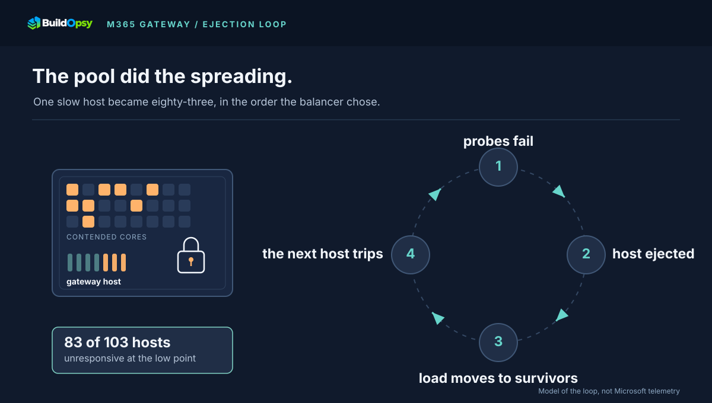

At 01:07 UTC on 12 November, Microsoft's automation moved Teams traffic off the alternative network gateway and onto the primary one, the gateway that also fronts Exchange Online. Nothing failed at that moment. The failover did exactly what it is built to do, and Microsoft describes the move as part of normal operations.
Fifteen hours later, mailbox access broke in every region. By the company's own account, more than 80 percent of the gateway fleet was unresponsive within two hours of the first customer-visible failure, and most of the following day went into discovering that restarting servers did not fix anything.
The preliminary report lists three causes: a latent defect, a surge in load, and a capacity shortfall. As a list, that reads as bad luck stacked three deep. As a sequence, it reads as a control loop, and the loop is the transferable part. Everything in it exists in your own stack under different names: a readiness probe, a load balancer, a retry budget, a rollback plan.

Two records of one machine
Microsoft published two accounts of the same system. The first arrived as service-health updates while the incident was live. The second is the preliminary post-incident report dated 15 November, summarised publicly by Charles Lamanna, the executive vice president for Copilot, Agents and Platform.
The earlier account is not wrong. It is what a probe can see from outside: servers failing checks, a component that processes health looking suspicious, a recent network configuration change that correlates with the start of impact. The later account names the thing underneath. Put side by side, the two records explain why so many operators spent the first day chasing the wrong layer.
| What the live updates said (12–13 Nov, UTC) | What the report says (15 Nov) |
|---|---|
| Affected servers were "failing automated health checks, which is causing them to become unavailable". | Lock contention inside an internal Windows process exhausted CPU and memory, so servers stopped responding under load. |
| Failed checks "may originate from a specific component that's responsible for processing server health". | The defect came from a fix written for the gateway servers and deployed since July. The health path was where the exhaustion surfaced, not where it started. |
| A network configuration change was "correlated with the start of the impact" and was reverted. | The report does not cite that change as the cause. It attributes the failure to the latent defect and two load conditions. |
| "The elevated load isn't driven by an overall increase in traffic, but by a large number of servers being unexpectedly unavailable." | Both, in sequence: the unavailable servers concentrated load, and the concentration is what knocked over the ones still standing. |
If you had read only the first column, you would have concluded that the health-check component was the bug. It was the instrument. A health check is a vote, not a diagnosis: it answers "should I send work here?" and says nothing about why. Every failover system in production is built on that vote, which is why the vote has to be paired with an answer to the next question, and that question is capacity.
What 14 percent adds, and what 80 percent takes
Two of the three listed causes are capacity numbers, and they behave completely differently. About 14 percent of gateway server capacity was already out of service from an unrelated problem the day before. Spread the remaining load across what is left and each survivor carries roughly 1.16 times its share. Microsoft says that reduction "had no impact on its own", and the arithmetic agrees: a 16 percent concentration is the kind of thing a fleet with headroom absorbs.
The 80 percent number does not behave that way. When more than four in five servers are unresponsive, the survivors are asked to carry the whole load across one fifth of the fleet, which is at least five times their normal share. That is the difference between a subtraction and a division. Fourteen points removed from a hundred is a subtraction on capacity. Redistribution divides the remainder.
Worse, the division runs while demand is rising, not fixed. Every request that fails becomes a request that retries. Microsoft describes the recovery phase as servers being "immediately overwhelmed by waiting traffic" and going unresponsive again, which is what a queue looks like when the arrival rate is above the drain rate. The stabilising condition is narrow and unforgiving: service recovers only once the active fleet can serve more than the offered load, and every ejection moves that condition further away.
The pool was built for a different failure mode
Health checks, outlier detection and traffic redirection are all designed around fail-stop. A node that is dead serves nothing, contributes nothing, and evicting it costs you exactly its share of capacity. The trade is clean: you lose a server, you keep the request.
The failure in this incident was fail-slow. A 2018 USENIX study by Gunawi and colleagues collected 101 reports of fail-slow hardware incidents from large-scale cluster deployments in 12 institutions, and found that disks, SSDs, CPUs, memory and network components can all keep running while performing far below expectation. Two of its observations land on this incident directly. Faults convert from one form to another, and a degraded component can hold work that healthy peers then cannot use: in the paper's example, a degraded network card made jobs on healthy machines hold task slots, so new jobs could not start. Its conclusion concerns the tooling. Today's software is “arguably robust at logging and recovering from fail-stop hardware: there is a clear, binary signal that is fairly easy to recognize and interpret”, and fail-slow is the harder problem because a degraded node still looks like a node.
Evicting a fail-slow node is not the same trade. It was doing some of the work, badly. Removing it does not create capacity anywhere; it relocates a queue onto peers that are, by construction, the machines most likely to share its defect, because they run the same build on the same hardware generation.
Load balancers know this. Envoy's outlier detection document states the limit plainly: a host is only ejected if the number already ejected is below a configured maximum, and an ejected host "will not be used during load balancing unless the load balancer is in a panic scenario". Panic mode exists because ejection is a good trade only while the pool is large. Push eviction far enough and the system has to start using the hosts it just decided were broken, because the alternative is using none.
Microsoft's fleet appears to have reached that point and kept going. The report also says the gateway is made of thousands of capacity units grouped into regions, and that the bulkheads between those partitions did not stop the cascade, "due to a separate issue" the report does not describe. Isolation is the control that would have kept this regional. It was the one that failed without explanation.
There is a second asymmetry in the report that most summaries skip. Teams, OneDrive, SharePoint and the Office apps were able to fail out of the faulty gateway and recovered earlier. Exchange Online could not, for scale reasons: there was nowhere large enough for it to go. A service can only leave a bad path if a destination exists with room for it, which is why the largest service on the path is the one that stays.
Restart is a load event
The recovery is the more instructive half of the incident, because recovery is where the loop became visible even to the people inside it. At 23:55 UTC on 12 November, Microsoft reported that servers returned to service "initially remained healthy but then become unresponsive again" once they received traffic. At 01:53 UTC they disabled some of the automated traffic redirection. At 07:20 UTC they began applying an update that returned the connection-handling code path to its previous known-good state, in groups large enough to take more than half a region out of service at a time.
Read that sequence as three separate lessons. First, a restart does not repair a defect that is in the code path; it clears the node's state and hands it back to the same code. Second, restoring a node adds capacity and adds demand at the same moment, because the queue that formed while it was gone is still pointed at it. Third, the thing that finally changed the shape of the incident was turning the amplifier down: disabling automatic redirection at 01:53, fourteen hours before the fleet was stable.
That ordering is the part worth copying into a runbook. Most teams treat "restore the servers" and "reduce the load" as the same action performed in different directions. They are not. Re-entry has to be throttled to a rate the surviving fleet can absorb, which usually means admitting less traffic than you could serve for a while, and letting the backlog drain against known-good capacity instead of against every node that just came back.
The bench
I built a small model of the loop to check whether the described mechanism is sufficient to produce the reported shape. It is not Microsoft's topology, and none of its numbers are Microsoft's. It is 120 hosts at 100 connections per second each, 17 of them already out of service, an offered load at 80 percent of nominal, a two-tick probe window, and a retry term so that unserved demand feeds back as new demand. One hundred of the 120 hosts are exposed to the defect; the other twenty are not, which is the report's observation that contention was worse on newer machines with more cores.
Switch between the two control choices and watch what changes. The curve is the same failure in both runs. Only the response differs.
Ejection bench · model output
policy in usethe alternative
Eject-on-failure: probes fail, hosts leave the rotation, and their share lands on the survivors until the survivors fail in turn. The 20 hosts that never trip are the model's immune machines.
The eject run reproduces the reported numbers closely enough to be interesting: 83 of 103 serving hosts unresponsive, which is 80.6 percent, reached in about 88 minutes if each tick is two minutes. The model does not know Microsoft's probe interval, exposure ratio or retry behaviour; those are mine. What it does show is that the reported mechanism needs no additional cause to produce the reported shape. A defect that only bites under concentration, a balancer that concentrates by design, and a retry pattern that regenerates demand are jointly sufficient.
What the record leaves open
Three consequential things in this incident are asserted without explanation. The first is the bulkhead failure. The report says the partitions between capacity units and regions did not contain the cascade "due to a separate issue" and does not say what that issue was, which is the single most important unanswered question in the document, since it is the difference between a regional incident and a global one. The second is the unrelated problem that had already removed 14 percent of capacity; its cause is not described. The third is what prompted the Teams failover fifteen hours before impact. Microsoft calls it normal operations and does not say what triggered it.
The preliminary report also promises a final one within five business days, which points at 20 November 2026, and states that it will supersede this document. Any analysis built on the preliminary text is provisional by construction, including this one.
What the record does establish: the incident ran from 16:20 UTC on 12 November to 16:10 UTC on 13 November. Microsoft attributes the failure to a latent defect and two load conditions, states that its load testing used weaker hardware than production, and states that no cyberattack or AI involvement was found. What it does not establish is how many customers were affected, how deep the impact went inside individual tenants, or whether the regional isolation controls had ever been tested against an all-region load event.
Four dials
The article so far has been diagnosis. The useful output is smaller than a playbook: four settings that change the shape of the curve above, in the order I would reach for them.
- Admission control. In the bench, this is the only dial that changes the outcome rather than the speed. Capping the load each host may accept keeps every host below the threshold that triggers the defect, which costs a third of throughput and saves the fleet. It is also the only control that works while the defect is still deployed, because it does not depend on finding the bug first.
- An ejection ceiling. This is Envoy's
max_ejection_percent, and it is easy to leave at a default you have never read. A ceiling turns an unbounded cascade into a bounded degradation, and it is the difference between a fleet that serves 60 percent of traffic badly and one that serves none of it. - Probe semantics that see slowness. A liveness check returns one bit. A latency-aware probe returns a distribution, and the distribution is what a fail-slow defect changes first. If your probe cannot distinguish "answers in 20 ms" from "answers in 4 s", your balancer will keep the second host in rotation until it stops answering entirely.
- A re-entry rate. Restore capacity in fractions of the surviving fleet, not in fixed batches, and keep automatic redirection disabled until the queue is draining rather than growing. Microsoft turned its redirection down fourteen hours before the service was stable; the ordering is the lesson.
The related arithmetic is in the target capacity calculator if you want to size a pool for N-1 rather than for the average case, and in the queue backlog drain calculator if you want to know how long a backlog takes to clear at a given drain rate. Neither tool models a retry storm; add that term yourself.
If your service has one component that cannot fail out of a shared path, the thing to rehearse is not the failover. It is the decision to serve less.
Sources and method
Report dated 15 November 2026. Root-cause factors, the incident window, the action log, the 50-percent-of-a-region restoration batches, and the commitment to a final report. Read from a public mirror; the original is distributed in the Microsoft 365 admin center.
Microsoft's executive vice president for Copilot, Agents and Platform. The public version of the root-cause text, including the 14 percent capacity figure and the 80 percent unresponsive figure.
The health-check and network-configuration framing quoted in the comparison table, and the 01:53 UTC redirection disablement and the 23:55 UTC update saying restored servers failed again.
101 fail-slow incident reports from 12 institutions. Used for the failure-mode distinction and for the observation that faults convert and cascades are long.
Ejection ceilings, ejection backoff, and the panic behaviour in which ejected hosts are used again when too few healthy hosts remain.
Context only: the same week's unrelated Apple, Marriott, FAA, United and Chase disruptions. None of it is treated here as connected to this incident.
The bench is a deterministic toy model, not a reconstruction. Its inputs are: 120 hosts, 100 connections per second per healthy host, 15 per second per contended host, 17 hosts already out of service, offered load at 80 percent of nominal, a retry coefficient of 1.5 capped at 2.5 times nominal, a two-tick probe window, 100 of 120 hosts exposed to the defect, and a shed rate of 60 connections per second per host in the held-pool policy. Ticks are plotted as two minutes each. Every percentage attributed to Microsoft comes from the report; every percentage attributed to the model is Buildopsy arithmetic over those stated assumptions. The figure on this page is drawn from the model, not from provider data.